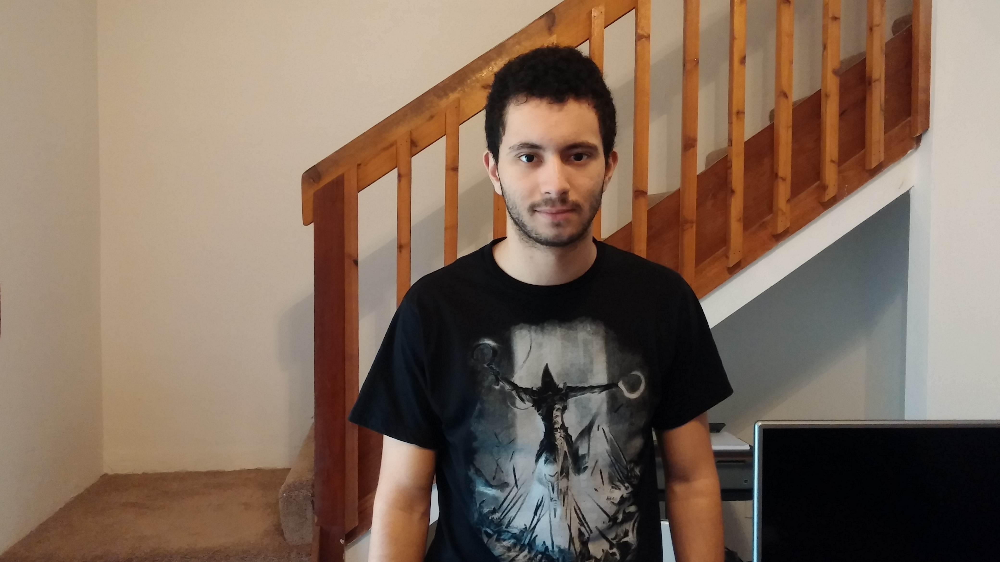

Childhood
I was born in Casablanca, Morocco April 28, 1993. My mother was a flight attendant at the time while my father worked as the head of security for the same company, Royal Air Maroc, where they initially met. We moved to Bradenton, Fl June 2000 along with my older brother and my dad started to work as a tennis coach at IMG Tennis Academy. I spent most of my childhood going to school, playing tennis, learning martial arts, gaiming, and going to the beautiful beaches in Bradenton and Sarasota.
Present
Currently, I am a student at the University of Florida working towards a combined bachelor's/master's degree in Computer Science Engineering. I have always been my family’s and friend’s troubleshooter. I enjoy solving problems using logic. I am a very logical person (or so I like to think). You can see this in how I approach tennis, martial arts and gaming, all of which require you to constantly question why x is more efficient than y. I have been hit many a time by my instructors for asking questions on why a certain technique is done x way instead of y way. I enjoy questioning things and solving the problems that arise from those questions. To me, this is the meaning of computer science. It is the only major in the world applicable to almost everything we do in our daily life. It can help advance and nurture every sort of activity. A perfect example of that are the new tennis rackets built with a mini computer chip that will record the player’s hitting habits, which includes their swing speed, swing angle, habit to either hit with topspin or more of a flat, round stroke. As you can see by this example, computer science can be applied to virtually anything and this amazes me.

Future
In the future I would love to travel the world and experience all the different cultures that this magnificent world has to offer. I hope to someday positively impact this same world with the knowledge I have accumulated and will accumulate over the years.